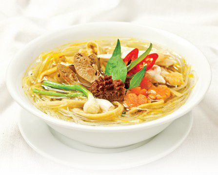

Miến măng gà là món ăn phổ biến ngày Tết miền Bắc với sự kết hợp của gà và măng, giúp bổ sung nhiều chất xơ giúp các bạn cân bằng được lượng dinh dưỡng cần thiết cho cơ thể.

Nguyên liệu
-Gà ta: 1/2 con
-Lòng gà: 1 bộ
-Măng khô: 200g
-Miến đậu xanh: 400g
-Cà rốt: 50g
-Nước dùng nấu từ xương gà: 1,5 lít
-Hành lá, rau răm, hành phi, ớt
-Muối, tiêu, nước mắm, đường phèn
-Bột ngọt
Cách làm
- Gà làm sạch, ướp với 1m muối và 1m bột ngọt, để thấm 20 phút, cho vào nồi nước dùng luộc chín, vớt ra nhúng qua nước lạnh, để ráo. Xé thịt gà để riêng, phần xương cho vào nồi nước dùng nấu tiếp.
- Lòng gà làm sạch, rửa qua bằng nước sôi, cắt khía. Miến ngâm nước ấm 20 phút, vớt ra để ráo. Măng ngâm mềm, rửa sạch, xé nhỏ vừa ăn. Cà rốt cắt khối vuông. Hành lá cắt riêng đầu hành, phần lá cắt nhỏ. Rau răm rửa sạch, cắt nhỏ.
- Xào sơ măng, nêm 1/2m bột ngọt và 1m nước mắm. Đun sôi nước dùng, cho măng, lòng gà và cà rốt vào nấu chín, nêm 1/2m muối, 1/2m đường phèn và 2m bột ngọt, thêm đầu hành lá và 1M nước mắm cho vừa ăn, tắt bếp.
- Chần sơ miến qua nước sôi, cho vào tô, chan nước dùng vào ngập miến, xếp măn, thịt gà xé và lòng gà lên trên, rắc thêm tiêu, hành lá, hành phi và rau răm, dọn kèm nước mắm và ớt cắt lát.
Mách nhỏ
Chọn gà dầu mềm, thịt sẽ béo và ngọt hơn. Khi xào măng nêm 1 ít bột ngọt và nước mắm sẽ giúp măng thơm và đậm đà hơn. Nên chọn măng khô non, dày, tốt nhất là chọn phần đọt.